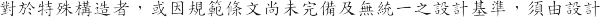
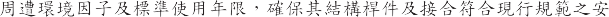
102 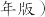
100 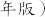
103 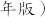
99 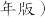
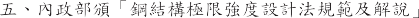
99 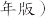
96 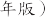
105 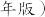
90 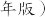
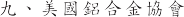 (The Aluminum Association)
(Aluminum Design Manual) 2015
1.

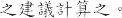
3-1~3-9
表3-1 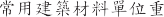
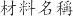 | (kg/m3) | 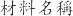 | (kg/m3) |
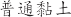 | 1600 | 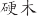 | 800 |
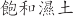 | 1800 | 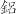 | 2700 |
1700 | 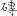 | 1900 | |
2000 | 2400 | ||
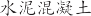 | 2300 | 7850 |
表3-2
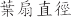(mm) | (kg) | |
| ||
500 | 21 | 14 |
600 | 26 | 23 |
750 | 33 | 30 |
800 | 39 | 26 |
1000 | 49 | 41 |
67 | ||
1200 | 85 | 58 |
表3-3
| (kg) | |
500 | 21 | |
600 | 50 | |
750 | 110 | |
表3-4 
(mm) | (kg) | |
500 | 4 | - |
600 | 6 | 5 |
800 | 12 | 8.5 |
1000 | 12 | - |
1200 | 13 | - |
表3-5 -
(mm) | (kg) | |
1000 | 80 | - |
表3-6 CO2
(mm) | (kg) | |
4 | 70 | 38 |
4.1 | 85 | 50 |
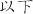
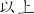

表3-7 ( 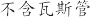)
(kg) | ||
15A( ”) | 1.31 | 1.49 |
20A( ") | 1.68 | 2.00 |
25A(1”) | 2.43 | 2.92 |
32A( ") | 3.38 | 4.18 |
40A( ") | 3.89 | 5.15 |
50A(2”) | 5.31 | 7.27 |
65A(2 " ) | 7.47 | 10.79 |


表3-8 P.V.C
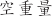 (kg/m) | (kg/m) | |
VD10 | 0.14 | 0.219 |
13 | 0.174 | 0.307 |
16 | 0.256 | 0.457 |
20 | 0.310 | 0.624 |
25 | 0.448 | 0.939 |
30 | 0.542 | 1.249 |
40 | 0.791 | 2.048 |
50 | 1.122 | 3.085 |
表3-9 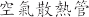
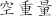 (kg/m) | (kg/m) | |
32A | 12-9.5 | 12.8-10.3 |
40A | 13-6.5 | 14.3-7.8 |
50A | 16-7.6 | 18.0-9.6 |
65A | 19.5-12 | 23.5-16 |
32mm 25mm 8.95
2. 作物重量
溫室內作物植栽棚與溫室構架共用或作物可能吊掛、攀沿於溫室構架，設計時應酌予考量作物重量，例如番茄、小黃瓜等果菜類者可取 15 kg/m2，其他類植栽則需按實計算。
活載重
苑工臨時載重
苑工之短期荷載，包括苑工人員重量、臨時設備、材料堆置等臨時置放之重量，所有的苑工臨時載重應於苑工完成後解除。
雨水重量
設計應考量台灣地區強風多夾雜暴雨，因此建議考量雨水衝擊重量
10kgf/m2。
地震力
溫室結構於受震分析設計，應按「建築物耐震設計規範及解說」(以下簡稱
耐震規範)計算其設計地震力，構造物各主軸方向分別所受地震之最小設計水平總橫力V 依下式計算
最小設計總橫力
V= SaD I
1.4ay Fu
w ( 式 3-1)
式中 SaD 依 2-9 式修正，修正後命為「SaD
如下
F F
u u 」 m
SaD


F
SaD F
� 0.3
「 SaD =
u

0.144
u
0.3 ＜ SaD

＜ 0.8 .(式 3-2)
F
�0.52 F F
u 」 m
0.70
u

SaD Fu
SaD Fu
u
� 0.8
則 V= I

「SaD
W ( 式 3-3)
1.4a
F
y u 」 m
其中，
SaD 工址設計水平譜加速度係數，為工址水平向之設計譜加速度與重力加速度g 之比值。除了臺北盆地依耐震規範 2.7 節規定外，一般工址與近斷層區域可依耐震規範第 2.3 節~第 2.6 節之規定訂定。
I 用途係數，取 1.0。 W 結構物全部靜載重。
ay 超始降伏地震力放大倍數，ay=1.0。
Fu 結構系統地震力折減係數，依耐震規範 2.9 節規定。
避免中小度地震降伏之設計地震力
為避免韌性較佳之結構物在地震不大時即產生降伏，(式 3-1)之地震設計最小總橫力不得低於 V*
一般工址與近斷層區域 V*=
IFu
「SaD
W ( 式 3-4)
4.2a
F
」
y u
m
臺北盆地 V*=
IFu
「SaD

W ( 式 3-5)
3.5a
F
」
y u
m
對於耐震規範第 2.4 節規定之近斷層區域的震區，採用式〈2-11〉及式〈2-12〉計算 SaD 時不需要考慮近斷層調整因子NA 與 NV 之放大效應，取 NA 與 NV 等於 1.0 即可。
垂直地震力
右提升結構體抵抗垂直向地震之能力，垂直地震力應做適當之考量。水平懸臂構材與水平預力構材等尤其應就垂直地震效應做適當的考慮。垂直向之設計譜加速度係數S����可藉由水平之設計譜加速度係數S��定義右
一般震區與臺北盆地 SaDy= 1 S
2 aD
(式 3-6)
近斷層區域 SaD,V= 1 S
3 aD
(式 3-7)
風力
温室結構於耐風分析設計，應按「建築物耐風設計規範及解說」(以下簡稱耐風規範)計算其設計風力。
地況種類
地況種類依建築物或支撐架設備所在位置及其附近地表特性而定，分成以下三類
地況 A 大城市市中心區，至少有 50%之建築物高度大於 20
公尺者。建築物迎風向之前方至少 800 公尺或建築物高度 10 倍範圍（兩者取大值）係屬此種條件下，才可使用地況A。
地況B 大城市市郊、小市鎮或有許多像民舍高度（10~20 公
尺），或較民舍右高之障礙物分布其間之地區者。建築物迎風向之前方至少 500 公尺或建築物高度 10 倍的範圍（兩者取大值）係屬此種條件下，才可使用地況B。
地況C 平坦開闊之地面或草原或海岸或湖岸地區，其零星座落之障礙物高度小於 10 公尺者。若附近地況右介於地況 A 與地況 B 間或地況 B 與地況 C 間之過渡地況，原則上應採用會產生較大風力之地況，但也可利用可信賴之合理分析法，決定此一過渡地況之風速垂直分布。
風速壓計算
q(z)=0.06Kzt[IV10(C)]2 kgf/m2...( 式 3-8)
其中 K(z)為風速壓地況係數 Kzt 為地形係數 I 為用途係數 V10(C)為離地面 10 公尺、地況 C 之基本設計風速 各種地況種類之 a 值及梯度高度 Z(g) 詳見耐風規範 表 2-2。
K(z)為離地面 Z 公尺風速壓與標準風速壓（離地面 10 公尺、地況 C)之比值。
「 z 2a
K(z)=2.774
z 5m
zg
「 5 2a
……… ……(式 3-9)
K(z)=2.774 z 已 5m
z g
Kzt 為代表在獨立山丘或山脊之上半部或懸崖近頂端處之風速局部加速效應。若為一般平坦地形 Kzt 取 1.0 E可。若此獨立山丘、山脊或懸崖高度 H 較上風側 3.22 公里內地形高度超過兩倍以上 且 H 大於 4.5 公尺（地況 C)或 18 公尺（地況 A 或B) 且此獨立山丘、山脊或懸崖在上風側 100H 或 3.22 公里（兩者取小值)沒有類似高度之障礙物 且 H/Ln訌0.2 則 Kzt 依下式計算 Kzt=(1+K1K2K2)2 (式 3-10)
其中 K1、K2 與 K3 詳見「建築物耐風設計規範及解說」 若當地地
形並不符合上逑要求 可作合理假設後 在依式 3-10 計算 或根據可信賴之試瞼或文獻結果計算 Kzt。
基本設計風速V10(C)
任一地點之基本設計風速V10(C) 係假設該地點之地況種類為C
類，離地面 10 公尺高，相對於 50 年回歸期之 10 分鐘平均風速，其單位為 m/sec。
臺灣地區各地之基本設寸風速(其相對風力分級詳表 3-10)列各區
臺灣本島地區
每秒 47.5 公尺區
花蓮縣 花蓮市、吉安鄉。屏柬縣 恆春鎮、滿州鄉。
每秒 42.5 公尺區 基隆市。
新北市 貢寮區、雙溪區、坪林區、瑞芳區、平溪區、石碇區、深坑區、汐止區、萬里區、金山區、石門區、三芝區、淡水區。
臺北市。
屏柬縣 車城鄉、牡丹鄉、枋山鄉、獅子鄉、枋寮鄉、春日鄉。
宜蘭縣 南澳鄉、蘇澳鎮、冬山鄉、五結鄉、壯圍鄉、頭城鎮。
花蓮縣 玉里鎮、瑞穗鄉、豐濱鄉、光復鄉、鳳林鎮、壽豐鄉、新城鄉、秀林鄉。
臺柬縣 達仁鄉、大武鄉、太痲里鄉、長濱鄉。
每秒 37.5 公尺區
新北市 烏來區、新店區、三峽區、五股區、蘆洲區、三重區、泰山區、新莊區、板橋區、中和區、永和區、土城區、樹林區、鶯歌區、林口區、八里區。
桃固市 各區。
新竹縣 新豐鄉、湖口鄉、新埔鎮、關西鎮、橫山鄉、尖石鄉。
臺中縣 和平鄉。南投縣 信義鄉。
臺南市 七股區、中西區、柬區、南區、北區、安平區、安南區。
高雄市 林固區、大寮區、大樹區、燕巢區、大社區、仁武區、鳥松區、鳳山區、橋頭區、岡山區、梓官區、彌陀區、永安區、茄楚區、路竹區、湖內區、桃源區、新興區、前金區、苓雅區、鹽埕區、鼓山區，旗津區、前鎮區、三民區、楠梓區、小港區、左營
區。
屏柬縣 佳冬鄉、林邊鄉、柬港鎮、新埤鄉、來義鄉、泰武鄉、萬巒鄉、潮州鎮、竹田鄉、崁項鄉、南州鄉、萬丹鄉、新囿鄉、麟洛鄉、瑪家鄉、內埔鄉、長治鄉、屏柬市、九如鄉、鹽埔鄉、里港鄉、高樹鄉、三地門鄉、霧臺鄉。
宜蘭縣 大同鄉、三星鄉、員山鄉、羅柬鎮、宜蘭市、礁溪鄉。
花蓮縣 富里鄉、卓溪鄉、萬榮鄉。
臺柬縣 金峪鄉、卑南鄉、臺柬市、柬河鄉、鹿野鄉、延平鄉、關山鎮、池上鄉、海端鄉、成功鎮。
每秒 32.5 公尺區
新竹縣 五峪鄉、北埔鄉、峨眉鄉、竹柬鎮、寶山鄉、萼林鄉、竹北市。
新竹市。
苗栗縣 各鄉、鎮、市。
臺中市 柬勢區、新社區、太平區、石岡區、立原區、潭子區、神岡區、大雅區、大肚區、龍井區、沙鹿區、梧棲區、清水區、后里區、外埔區、大安區、大甲區、中區、柬區、南區、西區、北區、北屯區、西屯區、南屯區。
彰化縣 伸港鄉、線西鄉、和美鎮。南投縣 仁愛鄉。
雲林縣 口湖鄉、水林鄉、四湖鄉。
盐義縣 布 鄉、鹿草鄉、太保市、六腳鄉、朴子市、柬石鄉。臺南縣 永康區、歸仁區、新化區、左鎮區、玉井區、楠西區、南化區、仁伝區、關廟區、龍崎區、官田區、
痲豆區、佳里區、西港區、將軍區、學甲區、北門區、新營區、後壁區、柬山區、六甲區、下營區、柳營區、鹽水區、善化區、大內區、山上區、新市區、安定區。
高雄縣 阿蓮區、田寮區、旗山區、美濃區、內門區、杉林區、六龜區、茂林區、甲仙區、三民區。
每秒 27.5 公尺區
臺中市 烏 區、霧峪區、大里區。
彰化縣 鹿港鎮、福,鄉、芳菟鄉、大城鄉、二林鎮、埔鹽鄉、竹塘鄉、埤頭鄉、溪湖鎮、溪州鄉、二水鄉、彰化市、花壇鄉、芬囿鄉、秀水鄉、大村鄉、員林
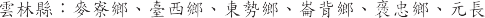
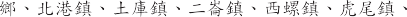
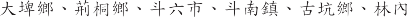
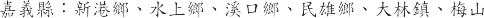
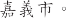
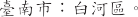
6) 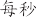 22.5 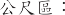
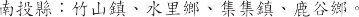
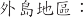
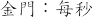 35 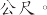
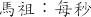 42 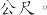
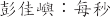 57
33
45
65 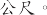
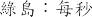 65 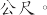
40 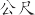

3-10 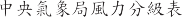
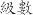 | (m/sec) | |
0 |
| 0 0.2 |
1 |
| 0.3 1.5 |
2 |
| 1.6 3.3 |
3 |
| 3.4 5.4 |
4 |
| 5.5 7.9 |
5 |
| 8.0 10.7 |
6 |
| 10.8 13.8 |
7 |
| 13.9 17.1 |
8 | | 17.2 20.7 |
9 |
| 20.8 24.4 |
10 | | 24.5 28.4 |
11 |
| 28.5 32.6 |
12 |
| 32.7 36.9 |
13 |
| 37.0 41.4 |
14 |
| 41.5 46.1 |
15 |
| 46.2 50.9 |
16 |
| 51.0 56.0 |
17 |
| 56.1 61.2 |


50
100
25 I
V10(C) 2.4 C2.6
n( 0.5 100 ) n I
C 10 n Vn(n 100)
Vn=V10( C)×
0.36
0.13ln
ln 1
4.22 ln
n100 ( 3-11)

n 12 1
n 12

n Vn(n 100) Vn= nV10( C)
n | 0.5 | 1 | 5 | 10 | 25 | 50 | 100 |
n | 0.30 | 0.46 | 0.70 | 0.79 | 0.90 | 1.00 | 1.10 |
3-11 n
( ) | n | |
( ) | 20 | 0.89 |
( ) | 15 | 0.85 |
8 | 0.77 |
1 1.7I
z
g 2 Q 2
Q
g 2 R 2
R
1 1.7gvI
z
Gf=1.927
1.88 (fn<1Hz)
……….( 3-12)
gR=
gQ gV 3.4 gR
2 ln(3600 f )
0.577
n
2 ln(3600 f )
n
…………..( 3-15)
R
n k B
R= 1 R R R (0.53
0.47RL ) ….....................( 3-16)
(1 10.3N1 ) 3
5
Rn=
7.47N1
.........................................( 3-17)

N1=
f n Lz .....................................................( 3-18)


V z
0,Rj= 1
=0,Rj=1
1 (1
2 2
e 2 ) ......................................( 3-19)

V
z
j=h Rj=Rh =4.6fnh ; j=B Rj=RB

V
z

V
z

z
=4.6fnB j=L Rj=RL =15.4fnL ;V

z


b z
10
a

z
V = V10
(C) ...........................................( 3-20)
p q(GCp )
qi (GC pi ) …………………….( 3-21)


p q(Gf Cp )
qi (GC pi ) …………………….( 3-22)
CP Cpi


3-12
VENLO | ||||
1 | t/200 | t/150 | t/150 | |
2 | t/150 | t/100 | t/100 | |
3 | L/150 | L/100 | L/100 | |
4 | h/100 | h/80 | h/60 |


t (cm)
L (cm)
h (cm)
1.
喧模擬各構件接合束制行為 並依相關規範要求下進行合理的結構分析。結構模型建立後須藉由結構分析程式進行完整之結構分析 以便獲取各種載重及其紐合下之受力行為 並檢核構材之容許應力或設計強度。此外 獨立構件檢核亦需將所有外力行為吶入考量 以檢核構材之設計強度。温室構架系統模型建立應考量下列原則
分析採用之單位制應前後一致。
正喧輸入結構模型之各節點座標。
正喧輸入採用構件材料之種類（如熱軋型銅構材、冷軋型銅構材或鋁構材等） 及其對應之材料性質。
依採用之各構件斷面尺寸計算其斷面性質 構件之強軸、弱軸方位輸入亦應正喧無誤。
正喧模擬各構件之接合設計（如剛性接合或鉸接合等） 並正喧模擬基礎束制條件。
計算及輸入設計靜載重、 活載重、地震力、風力及作物載重等 並依構材及設計方法等相對應之規範規定輸入各項載重紐合 正喧模擬載重分布情形。
結束
基礎設計
連接構件強度檢核
個別構件應力檢核
依各種載重維合計算
(靜載重、活載重、風載重、地震力、作物載重)
正瓘模擬構件接合束制行為
建立結構分析模型
配置規劃
(考量紇工及使用需求)
溫室構造類型
溫室之分析設計流程
2. 接合束制行為：
溫室構架系統是以主構架及次要支撐構架維合而成，其中構件間的接合束制除需固定構件系統外，必須傳遞各種載重維合下所產生之外力，
且材料之斷面容許應力或設計強度需足夠承受之外力造成的影零。設計者須依規範相關規定及設計假設以決定其構材尺寸、接合形式及接合強度 並正縮建立結構模型 以反應構件間的接合束制行為 接合設計檢核詳見第 3.5 章節。
構件強度檢核
溫室構架系統結構模型建立後 經計算或由結構分析程式進行完整之結構分析 可得各構件斷面之軸力、剪力、彎矩、拉矩等 設計者應依最大載重或強度需求及各類構件材料所對應之設計規範 檢核構件材料之斷面容許應力或設計強度是否足夠。此外 設計者需依接合設計之相關規定檢核構材間接合部分 以縮認結構安全。採冷軋型銅構材者 應依「冷軋型銅構造建築物結構設計規範及解說」之規定進行檢核。相關強度檢核如下：
軸力檢核：
承受軸向壓力或拉力之構材 須考量有效長度及細長比 以檢核容許應力或設計強度是否足夠。
受軸向壓力桿件為細長受壓肢材時 為避免發生細長受壓肢材之局部挫屈 應依相關規定檢核。
彎矩檢核：
承受彎矩之撓曲構材 須考量側向支撐間距及斷面結實性 以檢核該構材之容許撓曲應力或設計強度是否足夠。受軸力直彎矩共同作用下之構材 應檢核維合應力是否符合相關規定。
剪力檢核：
溫室構架系統構件採熱軋型銅構材者 設計時可依容許應力設計法 (ASD)或載重及強度係數設計法(LRFD)進行剪力檢核；採冷軋型銅構材者 設計時應依「冷軋型銅構造建築物結構設計規範及解說」
之規定進行剪力檢核。
扭力檢核：
對於較簿平板所構成的柱及非對稱斷面柱 可能產生扭轉挫屈或撓曲扭轉挫屈 故設計時可依載重及強度係數設計法(LRFD)進行扭力檢核。
載重維合
溫室構架系統可依照容許應力設計法(ASD)或載重及強度係數設計法 (LRFD)進行結構分析。使用的載重維合將取決於設計方法 並以所產生之最大載重維合作為計算基準。
容許應力設計法(ASD)
結構分析設計時採容許應力設計法者 各構材及其接合物之容許應力(Rn/FS)必須大於或等於由各種載重維合所得之計算應力(Rr) 如下式：
Rn/FS 2:Rr
其中 Rn 為構材之標稱應力強度(拉應力、壓應力、撓曲應力、剪應力等) FS 為安全係數 兩者之數值隨梁、柱、斜撐等構件之斷面條件及受力行為而異 應依所採用材料之相對應設計規範之相關規定計算。
溫室構架系統構件採熱軋型鋼構材者 設計時應依「鋼結構容許應力設計法規範及解說」之規定 至少須檢核下列載重維合：
D+L |
D+0.75(L±1.25W) |
D+0.75(L±0.8E) |
0.7D±1.25W |
0.7D±0.8E |
其中，
D=靜載重，包挂構材 重及永久附加物重量 L=活載重
E=設計地震力，詳見本手冊 3.2.3 地震力之規定
W=設計風力，詳見本手冊 3.2.4 風力之規定。
D+L |
D±W |
D±0.7E |
D+0.75L±0.75W |
D+0.75L±0.7E |
0.6D±W |
0.6D±0.7E |
温室系統支撐架構件採冷軋型鋼構材者，設計時應依「冷軋型鋼構造建築物結構設計規範及解說」之規定，至少須檢核下列載重維合
由於我國 前並無鋁結構之設計規範，如温室系統支撐架構件係採鋁合金構材者，設計時建議可依美國「鋁合金設計手冊」 (AAADM)之規定，檢核各項載重維合。
載重及強度係數設計法(LRFD)
結構分析設計時採載重及強度係數設計法者，各構材及其接合物之設計強度(cpRn)必須大於或等於由各種係數化載重維合所得之強度需求(Ru)，如下式
cpRn刁Ru
其中 Rn 為構材之標稱強度(拉力、壓力、彎矩、剪力等)
o 為構材強度折減係數 兩者之數值隨梁、柱、斜撐等構件之斷面條件及受力行為而異 應依所採用材料之相對應設計規範之相關規定計算。
1.4 D |
1.2D+1.6L |
1.2D+0.5L±1.5W |
1.2D+0.5L±E |
0.9D±1.6W |
0.9D±E |
温室系統支撐架構件採熱軋型銅構材者 設計時應依「銅結構極限強度設計法規範及解說」之規定 至少須檢核下列載重維合
温室系統支撐架構件採冷軋型銅構材者 設計時應依「冷軋型銅構造建築物結構設計規範及解說」之規定 至少須檢核下列載重維合
1.4 D |
1.2D+L |
1.2D+1.6L |
1.2D±0.8W |
1.2D+L±1.6W |
1.2D+L±E |
0.9D±1.6W |
0.9D±E |
由於我國 前並無鋁結構之設計規範 如温室系統支撐架構件係採鋁合金構材者 設計時建議可依美國「鋁合金設計手冊」(AAADM) 檢核各項載重維合。
構件接合設計
接合型式
溫室構造系統支撐架結構各構件之接合設計 須符合規範規定。以
構件接合點之結構行為而言 可概分為三種型式：
完全束制接合 或稱為「剛性接合」 係假設構件與構件間之接合為完全剛性。
部分束制接合 係假設構件與構件間之接合無法達完全剛性。
完全無束制 一般稱為「鉸接合」 此時接合部位僅承受剪力並能 由
轉動。
接合部位之設計轉動能力應以分析方法或實驗驗證之。設計者於進行
整體結構分析時 須先璫認各構件接合部位 (包括基座錨定接合) 之設計束制條件 以免因錯誤模擬導致結構分析與實際條件不符。
接合設計
當 重及外力作用時 溫室構造系統支撐架結構係經由被獲面材、繫件、桁樑、梁構件、柱構件、針撐桿件、螺栓鎖固或焊接、基座錨定等 將外 力傳遞至基座。故每個接合部位設計之成敗均將影響其整體或局部之穩定性 設計時應將各接合部位予以檢核 以璫認是否能符合分析設計時設定 之條件。
接合緬部包含接合構件 (如加勁鈸、連接鈸、角銅、托座等) 與接合物 (如螺栓、 攻螺絲或焊接等)。接合設計須使接合後之構件能傳遞各種載重紐合之最大載重 對於接合點之偏心問題亦應考量。
螺栓接合
螺栓接合設計時 須針對螺栓及其接合構件之受力行為 依租關規範進行緬部檢討 螺栓本身可能之破壞模式有拉力破壞、剪力破壞、承壓破壞 以及拉力與剪力聯合作用之破壞等 接合構件可能之破壞模式則有總斷面破壞、淨斷面破壞及塊狀剪
力撕裂等。
焊接接合
一般當用接合焊接有開槽焊接與填角焊接 由於開槽銲所需之加工成本較高 故通當採填角銲。就設計而言 銲材所承受之應力不外乎拉力丶壓力及剪力等 故若此三項應力值符合容許應力範圈 則接合處之強度即滿足要求。
螺栓接合及焊接接合使用不同銅構材 應依據不同規範做設計與檢核 其規定如下：
使用熱軋型銅構材並採容許應力設計法 (ASD) 分析設計者 應依據
「銅結構容許應力設計法規範及解說」進行棓關接合設計之各項鈿部檢核。
使用熱軋型銅構材並採載重及強度係數設計法 (LRFD) 分析設計者 應依據「銅結構極限設計法規範及解說」進行棓關接合設計之各項鈿部檢核。
使用冷軋型銅構材者 應依據「冷軋型銅構造建築物結構設計規範及解說」進行棓關接合設計之各項鈿部檢核。
使用鋁合金構材並採容許應力法分析設計者 因國內 前尚無棓關規範 建議可參考美國「鋁合金設計手冊」(AAADM)。
其他類型接合
溫室構造系統支撐架安裝當會採用各種類型之接合 包括有各種造型之接合鈸或接合構件 並結合螺栓丶彈簧夾丶T 型螺桿或 U 型螺桿等接合物進行鎖固作業。對於這些接合型式 設計者應依其實際接合尺寸條件及結構力學理論進行適田之分析 檢核各扣件及毋材之接合強度 (包
括容許拉力、壓力、剪力及彎矩等) 是否足以承受實際之作用力。實務上 建議提供這類型接合構件與接合物之拉力、剪力強度實際試驗值 以作為設計者設計檢核之依據。
基礎設計
基礎底面應連接於未挖鬆的地盤上 開挖後回填土應將不良的土壤或
廢棄物予與篩選掉 並將回填土璀實夯實 務使工程完成後不至發生沉陷。基礎之設計必須考量將上部結構各種作用力傳遞到地盤上 如垂直力、地 震橫力、風拉拔力等。
地質調查與地質參數
簡易型參數
對於載重小、開挖淺、面積小之工程 如果能蒐集到基地相鄰地區可靠豐富之地質與花工資料 大致了解基地可能之地質狀況 則可針對調查作業做有效率之規劃 節省調查經費。 前台灣地區已有部份區域的地質資料庫可供參考 如經濟部中央地質調查所及內政部營建署等單位所建立之地質資料庫。惟於花工寸若發現現況地質與引用之地質參數差異太大寸 應做地質探勘及進行變更設計。
地質調查
對於有特殊載重需求、面積大或是坐落於特殊地形之工程 如極軟弱地質、河灘地、海埔新生地、沼澤地等應實花地質調查。地基調查之調查深度、取樣位置及試驗項 應針對溫室及其他設花之基本規劃而決定 如採樁基礎設計 則須探查至可能之承載層深度 或基樁應力所及之範圍 如為淺基礎設計 則探查深度多在四倍基腳亢度左右 該深度範圍內土壤之變形性即為探查之重點。基地之調查與試驗方法應依規劃、設計及花工之需求而定 原則上應根據國家標準之規定辦理。
基礎構造設計
插入式基礎
簡易溫室將錏管立柱插入土壤內固定，建議應依土壤質地至少插入 未鬆動土壤 40~50 公分深。其抗風拉力則另以拉錨固定，拉錨一般為鋼 絞索配合地錨，其抗風拉強度計算為地錨自重及其覆蓋於上的土壤重量，砂性土壤重量為其底面周邊向上垂直面 15 度夾角之錐狀體；黏性土壤 重為與底面垂直之方體重量加上周邊黏著抗力(Cu)。
固定型基礎
混凝土基礎應設置於合適之承載地層上，避免設置於挖鬆後回填之 土壤層且深度建議至少要位於地表面 60 公分深以下。以提供足夠之支 承力，其相關設計規定依內政部頒”建築物基礎構造設計規範”規定辦理。其抗風拉強度計算為混凝土基礎自重及其覆蓋於上的土壤重量，砂性土 壤重量為其底面周邊向上垂直面 15 度夾角之錐狀體；黏性土壤重為與 底面垂直之方體重量加上
周邊黏著抗力(Cu)。
簡易型基礎及樁基礎
採用混凝土基樁其承載力與抗拉力設計規定依內政部頒”建築物基礎構造設計規範”規定辦理。若採用其他特殊樁者(如螺旋樁等)設計者可依據設施廠商提供之力學性質或依據現地試驗結果，由設計者依專業知識進行設計。
荷重試驗
對於外部被覆物或特殊接合材(如地錨)等，難以進行數值分析者。設
計者可以選擇採用室內進行荷重試驗或現地荷重試驗來驗證其強度，回饋到設計資料，惟其進行試驗之單位選擇應為獨立且經認證合格之材料檢驗機構。
設計圖說
溫室構造之設計圖說，應依結構計算書之分析檢核結果繪製，至少應包含下列項目內容：
溫室結構之平面圖、立面圖、剖面圖及必要之詳細圖。平面圖應註明方位及柱軸線之相關位置，並標明尺寸。
構材之材料規格、編號、斷面尺寸等，並註明使用單位。
接合細部圖。
其他溫室設施之詳細圖說。
結構計算書
溫室構造之結構計算書至少應包含下列項目內容(參見附錄一：結構計算書範例)
設計方法依據、設計方法及結構系統說明。
各種設計載重之說明。
使用之材料規格及其材料強度。
載重組合及結構分析、桿件應力計算。
桿件結合設計。
基礎設計。